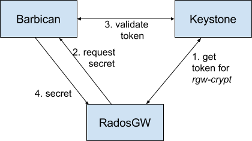

Notice
This document is for a development version of Ceph.
OpenStack Barbican Integration
OpenStack Barbican can be used as a secure key management service for Server-Side Encryption.

Configure Keystone
Barbican depends on Keystone for authorization and access control of its keys.
Create a Keystone user
Create a new user that will be used by the Ceph Object Gateway to retrieve keys.
For example:
user = rgwcrypt-user
pass = rgwcrypt-password
tenant = rgwcrypt
See OpenStack documentation for Manage projects, users, and roles.
Create a key in Barbican
See Barbican documentation for How to Create a Secret. Requests to
Barbican must include a valid Keystone token in the X-Auth-Token header.
Note
Server-side encryption keys must be 256-bit long and base64 encoded.
Example request:
POST /v1/secrets HTTP/1.1
Host: barbican.example.com:9311
Accept: */*
Content-Type: application/json
X-Auth-Token: 7f7d588dd29b44df983bc961a6b73a10
Content-Length: 299
{
"name": "my-key",
"expiration": "2016-12-28T19:14:44.180394",
"algorithm": "aes",
"bit_length": 256,
"mode": "cbc",
"payload": "6b+WOZ1T3cqZMxgThRcXAQBrS5mXKdDUphvpxptl9/4=",
"payload_content_type": "application/octet-stream",
"payload_content_encoding": "base64"
}
Response:
{"secret_ref": "http://barbican.example.com:9311/v1/secrets/d1e7ef3b-f841-4b7c-90b2-b7d90ca2d723"}
In the response, d1e7ef3b-f841-4b7c-90b2-b7d90ca2d723 is the key id that
can be used in any SSE-KMS request.
This newly created key is not accessible by user rgwcrypt-user. This
privilege must be added with an ACL. See How to Set/Replace ACL for more
details.
Example request (assuming that the Keystone id of rgwcrypt-user is
906aa90bd8a946c89cdff80d0869460f):
PUT /v1/secrets/d1e7ef3b-f841-4b7c-90b2-b7d90ca2d723/acl HTTP/1.1
Host: barbican.example.com:9311
Accept: */*
Content-Type: application/json
X-Auth-Token: 7f7d588dd29b44df983bc961a6b73a10
Content-Length: 101
{
"read":{
"users":[ "906aa90bd8a946c89cdff80d0869460f" ],
"project-access": true
}
}
Response:
{"acl_ref": "http://barbican.example.com:9311/v1/secrets/d1e7ef3b-f841-4b7c-90b2-b7d90ca2d723/acl"}
Configure the Ceph Object Gateway
Edit the Ceph configuration file to enable Barbican as a KMS and add information about the Barbican server and Keystone user:
rgw crypt s3 kms backend = barbican
rgw barbican url = http://barbican.example.com:9311
rgw keystone barbican user = rgwcrypt-user
rgw keystone barbican password = rgwcrypt-password
When using Keystone API version 2:
rgw keystone barbican tenant = rgwcrypt
When using API version 3:
rgw keystone barbican project
rgw keystone barbican domain
Brought to you by the Ceph Foundation
The Ceph Documentation is a community resource funded and hosted by the non-profit Ceph Foundation. If you would like to support this and our other efforts, please consider joining now.